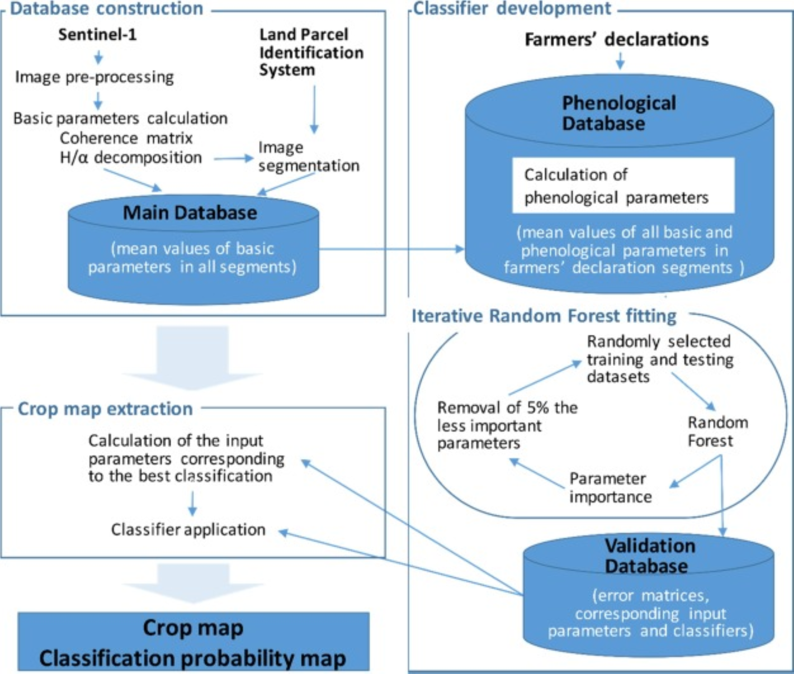

13 Crop monitoring with SAR images in Poland
13.1 Introduction
Modern agriculture increasingly relies on advanced technologies, including satellite observations, which enable precise and regular monitoring of crop conditions. These methods make it possible to estimate sown areas, assess plant health, and forecast yields on a large scale - often in real time. Satellite data from missions such as Sentinel-2 support decision-making by providing objective and detailed information about the land. In this context, remote sensing becomes a valuable tool not only for farmers but also for institutions responsible for monitoring agricultural production at the national level. Recognizing this potential, the aim of the task was to develop a method for identifying thirty seven types of crops such as winter cereals (barley, rye, triticale, wheat), spring cereals (oat and barley), root crops (potato, sugar beet), buckwheat, maize, winter rapeseed, strawberry, grassland, along with legumes (beans, peas, lupines, lentil), vegetables (carrots, parsley, lettuce, cabbage, cucumber, tomato, etc.) and fruit trees (mainly apples, pears, cherries and plums). The task utilized satellite data, specifically radar imagery from Sentinel-1 and optical imagery from Sentinel-2.
13.2 Methods
The task was carried out in the following stages:
- Data acquisition and pre-processing - development of automatic procedures for the collection and pre-processing of radar and optical images,
- Multi-temporal image processing implementation of procedures for processing bi-polarized Sentinel-1 radar images and Sentinel-2 optical images,
- Segmentation of images using the Land Parcel Identification System (LPIS) integrating bothSentinel-1 and Sentinel-2 data,
- Training the classification system and developing a crop classification algorithm based on optical and radar satellite images in appropriate time series,
- Development of a validation procedure,
- Creating procedures for reporting and creating statistics at all administrative levels of the country (voivodships, districts, communes).
The classification was carried out separately for each orbit based on the following three steps: 1) construction of the main database; 2) classifier development; and 3) crop map extraction (see Figure 13.1).
13.3 Data acquisition and pre-processing Satellite Data
As part of the crop classification task, satellite data from the Copernicus Sentinel missions were used. Procedures for the automatic downloading of satellite imagery were developed to support this process. Images can be retrieved directly from the Copernicus Data Space Ecosystem website. The downloading procedure requires specifying the time range of image acquisition, the area of interest, and the type of sensor. The product type is automatically matched to the selected sensor to ensure compatibility with the classifier’s requirements. Sentinel-1 radar images are downloaded in the SLC (Single Look Complex) format, while Sentinel-2 optical images are obtained in the S2MSI2A format, corresponding to Level-2A processing.
Procedures for data pre-processing were also created. For radar images, the procedure carries out orthorectification and filtration processes. In the case of optical images, errors in the cloud mask were diagnosed. For this reason, a procedure was developed that detects these errors in the first stage and corrects them, and then an algorithm was created to fill in the data gaps caused by cloud cover. The proposed procedure works for individual spectral channels and is adapted only to agricultural and forestry areas, excluding urban areas.
A set of C-band, dual polarization (VH + VV) mode, Single Look Complex (SLC) Sentinel-1 (S-1) products were used. Images for the period just before a growing season (mid-February–end-March) were acquired at a frequency of 12 days. During the growing season (beginning-April–end-September) images were acquired at a frequency of six or 12 days. A total of around 1,050 Sentinel-1 images were used for each year.
The Sentinel-2 dataset was acquired for the study area, focusing on agricultural land cover. The data consists of multispectral images containing 13 spectral channels with a spatial resolution of 10-60 m. The images cover multiple dates throughout the growing season, allowing extraction of temporal profiles and vegetation indices. These features were crucial for distinguishing crop types and served as input for machine learning-based classification.
13.4 Reference data
The reference data can include administrative data or in situ collections. Nevertheless, the quantity of point per given class is required for the sufficient level of the estimate accuracy. Tests were carried out on how the statistics of individual crops change depending on the size of the sample. It was considered that in the case of using in-situ data, the minimum sample per class should be not less than 50 points within one flight path of the S-1 satellite (for about 4-5 scenes). If agricultural declarations from the Agriculture Restructurisation and Modernisation Agency (ARMA) database are used as input, the sample will be balanced in numbers and no less than 800 points will be taken for training and testing classifications. The large size of the ARMA sample is due to its uncertainty.
Auxiliary data consisted of records taken from the Land Parcel Identification System database. This database contains vector data about, among other attributes, the use of the terrain (urban settlements, communication areas, forest, agriculture lands, etc.) and crop declarations made by farmers to receive direct payments under Common Agricultural Policy instruments. LPIS vector data formed the basis for image segmentation. Farmers’ declarations were used as a reference dataset both for training and validation of the classifier. Reference data were randomly sampled from around 2,000,000 agricultural parcels larger than 1 ha, for which only one crop had been declared. A total of 1, 000 parcels, per crop type, per orbit, were sampled. Of these, 80% were used for training, and 20% were used for validation. It was possible to extract the number of parcels per class for the following orbits (O): 22, 124, 51, 153. However, this was not possible for the most eastern and most western orbits, which only partially coincide with the country’s land area.
The study involves the identification and description of selected crops directly in the field (in situ) based on inspections of agricultural plots. Data was obtained from at least 50 representative plantations and collected in all provinces. Data preparation involves measuring plant height, inter-row width and development stages, taking photos from different perspectives and assessing weed infestation. All observations are carefully documented, and local conditions that may affect the reflection of radar waves are also taken into account, which ensures high quality and reliability of the information collected.
Development of vector data for object classification (training and control samples) based on information from administrative sources available in Statistics Poland, the Integrated Management and Control System (IACS) and the Database of Topographic Objects (BDOT). In the course of the work, the source data were analysed and the geometry of the spatial division units necessary to present the results were identified. For the presentation of project data, the use of vector data of administrative boundaries obtained from the National Register of Boundaries and the area of territorial division units of the country (PRG) at the level of municipalities was established. These data have been obtained annually from the Head Office of Geodesy and Cartography (GUGiK) since 2002. In addition, geocoding was performed, which ensures the presence of identifiers of space division units in the designed databases.
13.5 Multi-temporal image processing of Sentinel-1 and Sentinel-2
We developed procedures for the use of SAR polarimetric data, including the calculation of the T2 coherence matrix and H/α polarimetric decomposition parameters. After gernerating the A procedure has been created for mosaicking the output layers. Following the implementation of all processing steps, six input layers were generated for each acquisition date and each flight strip, forming the basis for calculating indicators. Subsequently, a series of indicators were created that describe phenological changes in crops using the difference between polarimetric parameters and changes over time in individual parameters.
The authors also developed a Normalized Multitemporal, which is calculated on the basis of individual elements of the coherence matrix or elements of the H/α decomposition for two terms. The ratio is calculated for all combinations of available dates, taking the earlier date as the start date and the later date as the final one. In total, about 3800 such parameters were calculated. The second type of developed parameters, which are aimed at describing the growth rate of crops, are parameters a and b of the linear function describing the increase in signal reflection intensity in individual periods. About 7500 such parameters were calculated. The third type of developed parameters related to crop growth are Standardized Ratio of Coherence Matrix Elements. These parameters describe the change in the way the wave is reflected depending on the shape of the crop. These ratio are calculated for individual dates. In total, about 110 parameters of this type were calculated.
At country scale, a pixel-based image processing approach would be time consuming, and require enormous computational power. Moreover, the results of such a classification would be affected by the well-known speckle effect. To overcome these problems, we adopted an object-oriented approach, based on the external vector layer of agricultural parcels. The construction of the database of objects used for classification was divided into three steps. In the first step, all images were pre-processed as follows:(1) Noise reduction in SLC S-1 products; (2) Range Doppler terrain correction was applied to project images to zone 34 of the UTM coordinate system; (3) Creation of mosaics (one mosaic per acquisition date), and (4) Image smoothing using an enhanced Lee filter (window size 3 × 3). Then, we built the coherence matrices and applied the H/α decomposition for dual polarization (VV + VH) data. The Coherence matrices were re-scaled using the following substitutions:
\[ T^{'}_{nR} = 1/2*ln(T^{2}_{nR} + T^{2}_{nI}) \] \[ T^{'}_{nI} = tan^{-1}(T_{nR} / T_{nI}) \] where \(T_{nR}\) is the real part of the coherence matrix \(T_{n}\), and \(T_{nI}\) is its imaginary part. Six basic parameters were obtained: three real parts of the coherence matrix – \(T_{11}\), \(T_{12}\), and \(T_22\), and three parameters of the H/α decomposition – entropy (H), alpha (α) and lambda (λ).
13.6 Image Segmentation
The next step involved image segmentation, with the objective of delineating spatially homogeneous segments such that each segment corresponded to a single crop type (Fig. 2). The segmentation process was performed using eCognition® software. To begin with, LPIS vectors were used to create initial segments that corresponded to parcels, and exclude non-agricultural areas of no interest (e.g. forests, water, built-up areas). As some LPIS parcels contained various crops, an additional division was needed. This was achieved using a time series of λ parameters from the H/α decomposition (eight images acquired in equal time intervals between the end of February and the end of June). The multiresolution segmentation method was used to divide heterogeneous segments. The main assumption of this re-segmentation was that the smallest segment had to be larger than 0.2 ha. The chosen segmentation method enables the integration of multiple image layers, offering consistent and reproducible results. The main parameter of the segmentation is the scale parameter, which was set based on trial and error by an experienced operator. The aim of the process is to create more homogenous objects than are needed, in order to avoid the situation where a heterogeneous object is not divided.

In the final step, mean values for the six basic parameters for each segment were calculated for all acquisition dates. This data was stored as records in the main database serving as a foundation for subsequent analyses. Since the records are not georeferenced, they allow for faster access and processing. Each entry remains connected to its corresponding segment on the map through a unique identification (ID) number, ensuring consistent referencing between the dataset and spatial layers.
13.7 Crop classification algorithms
13.7.1 Development of the phenological database
At the beginning, segments that correspond to the reference dataset extracted from farmers’ declarations were selected from the main database. Phenological crop growth descriptors were then calculated using the basic parameters derived from Sentinel-1 images and stored in the main database. The calculation of phenological indices was based on the assumption that, as crops grow, signal power, signal polarization and the scatter mechanism change. Thus the extraction of multi-temporal indices enhances differences among crops and increases classification accuracy. The following phenological indices were proposed and used:
- Time series of Normalized Ratio of Coherence Matrix Elements (\(NRCM_{i,j}\)). This index aims to enhance differences in the depolarization of the scattered signal from crops. It was calculated as:
\[ NRCM_{i,j,k,l}(t) = \frac{T_{ij} - T_{kl}}{T_{ij} + T_{kl}} \] where: \(T_{ij}\) and \(T_{kl}\) are elements in the coherence matrix. The indexes \(1 \le i \le j \le k \le l \le n\) are dimensions of a coherence matrix, and \(t\) is time.
Normalised Time Ratios (\(NRT^{n,m}_{i,j}\)) enhance the difference in the growing rate of plants in different periods. They were calculated from elements in coherence matrices according to the equation: \[ NTR^{n,m}_{i,j} = \frac{T_{ij}(t_n) - T_{ij}(t_m)}{T_{ij}(t_n) + T_{ij}(t_m)} \] with \(n \in {1..M − 1}\) and \(m \in {n + 1..M}\) where M is the number of images, \(T_{ij}\) is an element in the coherence matrix, \(t_n\) is an earlier time point and \(t_m\) is a later time point.
Similar indices were calculated for the parameters of the H/α decomposition. These indices show change over time in the entropy of the scattered signal and the scatter mechanism. \[ NTR^{n,m}_{ent} = \frac{P(t_n) - P(t_m)}{P(t_n) + P(t_m)} \] with \(n \in {1..M − 1}\) and \(m \in {n + 1..M}\) where M is the number of images, \(P\) is one of the parameters (H, α, λ) of the H/α decomposition, \(t_n\) is an earlier time point and \(t_m\) is a later time point.
Linear functions (LF) between local signal extremes (points where the signal power trend changes considerably) in time series are another way to enhance differences in plant growth rates. These were calculated for elements in the coherence matrices and for the parameters in the H/α decomposition, as follows: \[ P(t)=at+b \] for \(t\) between \(min(t_{local})\) and \(max(t_{local})\), where: P is a value of one of the six basic parameters. It can be an element in a coherence matrix or a parameter in the H/α decomposition, \(min(t_{local})\) is a time point where the signal value is minimum, and \(max(t_{local})\) is a time point where the signal value is maximum.
The final database contained mean values for all basic parameters and phenological indices in segments that corresponded to the reference dataset extracted from farmers declarations.
13.7.2 Iterative random forest fitting
Due to the large number of combinations of multi-temporal indices, each segment can be described by thousands of parameters. These parameters are not equally important for the classification, and some may degrade it by introducing noise. Therefore, iterative classifier fitting was applied to select the optimal parameters for classification. Each iteration is as follows:
- develop 10 random training and testing datasets (80% of objects were considered as training data, 20% were used for testing) based on the reference dataset.
- run a random forest classification (number of trees 1,000; depth 100).
- analyse the importance of every parameter.
- calculate the overall accuracy of the classification for each random training and testing dataset.
- calculate minimum, maximum and mean overall accuracy for each iteration, and remove 5% of the least-important parameters (as a compromise between the precision of the analysis and the calculation time).
The results of all iterations were stored in a validation database, which contained error matrices corresponding to input parameters and classifiers. Based on the error matrix, the best input parameters and classifier were selected and used for the final crop map extraction.
13.8 Validation
Validation of the classification results is carried out using in-situ data (the part of data that was not used to train the system), data from farmers’ declarations submitted to the Agriculture Restructurisation and Modernisation Agency system and data from ARMA on-the-spot inspections. The matrix of errors and accuracy of underestimation and overestimation of individual crops is calculated. Confusion matrices are produced separately for all classifications using 20% of parcels from reference datasets. Overall accuracy (OA) and kappa are calculated. User’s (UA) and producer’s (PA) accuracies, as well as the F1 score are calculated to assess omission, commission and mean errors within classes, respectively. To test the effect of mosaicking on the classification, we perform a map-to-map comparison of records in the farmer’s declarations database and the per-orbit classification before and after mosaicking.
13.9 Crop map publishing
Area statistics are created based on the resulting classification raster. The areas are added up to all administrative levels of the country (voivodeships, districts, communes). The identification number of individual units allows for the integration of this data with the Statistics Poland reporting system. The results of the classification are published on [geostatistical portal] (https://portal.geo.stat.gov.pl/). The refence paper for this work has been published in a leading journal [1].
References
[1]
E. Woźniak et al., “Multi-temporal phenological indices derived from time series Sentinel-1 images to country-wide crop classification,” International Journal of Applied Earth Observation and Geoinformation, vol. 107, p. 102683, 2022, doi: 10.1016/j.jag.2022.102683.